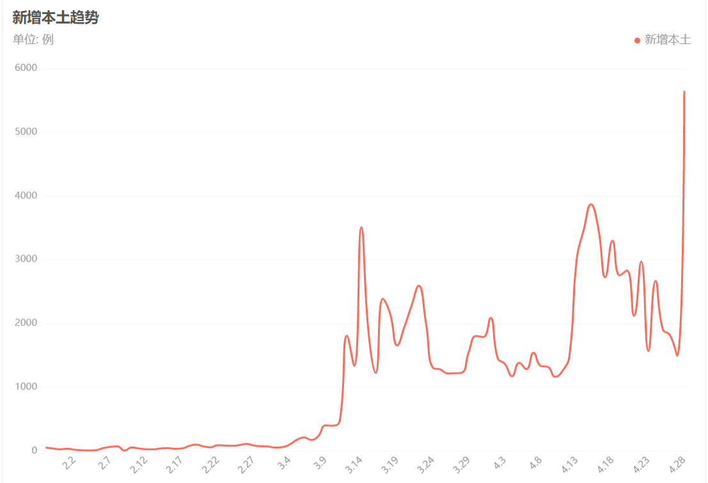
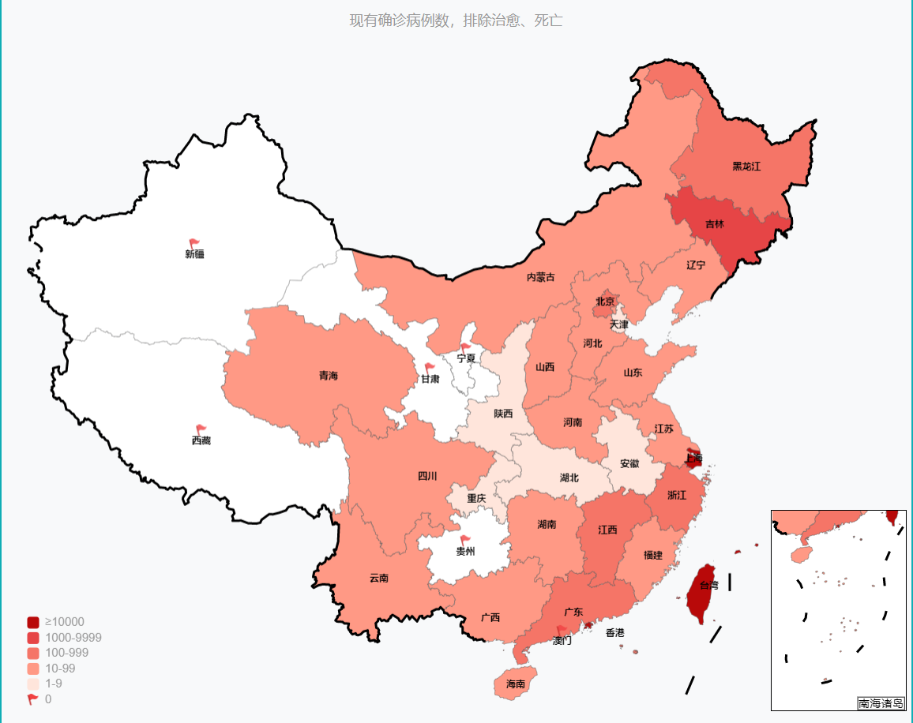

“五一”是否适合出游?最新情况通报
4月以来，全国31个省（自治区、直辖市）和新疆生产建设兵团累计报告本土感染者55万3251例，波及除西藏外的所有省份。
总体来看，近期全国疫情主要有以下几个特点：
一是继续呈现点多面广态势。4月全国共有31个省份261个地市报告本土疫情，报告本土疫情的地市数较3月份略有减少，但仍处于高位。
二是规模化与散在聚集性疫情并存。全国疫情仍主要以上海市和吉林省两地的规模化疫情为主，两地报告感染者数占全国总数的95%以上。除西藏未报告病例，重庆、宁夏等少数省份仅报告个别散发病例外，其余省份均存在本土聚集性疫情。
三是继续呈现多点多源多链的复杂局面。多个省份的疫情传播链条多，既有外省溢入疫情，也有本地源头不清的传播疫情，增加了疫情防控的复杂性和艰巨性。目前，河北、江苏、浙江、辽宁、安徽、江西、北京等省份疫情处置积极有效。吉林省疫情呈持续下降态势，吉林市疫情已进入隔离点阳性清零阶段，长春市疫情进入封控管控区清零阶段。上海市疫情整体呈现明显下降趋势，社会面疫情风险正逐步降低，但防控形势依然严峻，防反弹防外溢任务十分艰巨。
“五一”假期保障就医需求
医疗机构要严格落实假期期间值班要求和领导的代班制度，做好节假日期间的医疗服务安排和人力保障，特别是要保证急诊24小时开放，不得出现停诊和拒诊的问题。
要统筹疫情防控和正常医疗服务，全力满足人民群众正常的医疗服务需求。要求医疗机构要严格落实首诊负责制和急危重症的抢救制度，不能以任何理由推诿、拒绝和延误诊疗，要确保需要紧急救治和常规接续治疗的患者都能够得到及时的医疗服务。
一是要求医疗机构在急诊、抢救室、手术室和病房设立缓冲区域，对于核酸结果不明的一些急危重症患者，要及时救治，相关医务人员在做好个人防护的基础上，给予患者及时的治疗。对于像血液透析患者、放化疗的肿瘤患者，包括孕产妇和新生儿这些特殊群体，要实施精细化的分类服务，切实保障他们能够得到常规和连续的医疗。需要长期药物治疗的慢性病患者，按照最长不超过12周的要求，延长处方量，最大限度地满足患者的用药需求。
二是对于发生疫情的地区，要全力做好封控区、管控区的医疗服务保障，要安排医疗团队对有需求的人员提供咨询和评估，需要外出就医的，由社区点对点接送，达到闭环管理。
三是要加强医疗机构的科学精准防控，做到“非必要不封控”，不能因为疫情的处置，对医疗机构一关了之、一封了之。对于确需采取封管控措施的医疗机构，要迅速启动应急机制，切实保障急诊、血液透析室、手术室、重症监护室、分娩室等这些重点科室服务的连续性，尽最大可能来减少疫情防控对于医疗机构正常诊疗服务的影响。要通过这些措施，确保急危重症的患者救治有保障，慢性病的患者用药有供应，患者的常规医疗服务能够有渠道。
防止和杜绝地方擅自赋码、“层层加码”
目前物流不通不畅的问题总体得到缓解，但部分地区仍存在货车通行管控措施“层层加码”、物流微循环不畅等问题。“五一”假期及今后一段时间，交通运输部将指导各地切实保障交通干线的畅通，推动有关部门和各地一起规范健康码管理，深入推进健康码全国互认、一码通行、码卡融合、规范赋码，防止和杜绝地方擅自赋码、“层层加码”等现象，精准实施货车通行管控，提升通行效率，畅通城乡物流微循环，全力以赴做好涉疫地区民生物资和重要生产物资运输保障。
“五一”出行提醒
坚决防止和避免“放松防控”和“过度防控”两种倾向，统筹做好文化和旅游行业疫情防控和假日市场工作。
倡导本地游、周边游，降低疫情传播风险，有出游意向的公众，一定要密切关注国内疫情动态和中高风险地区的变化情况，不前往中高风险地区及其所在的县（区）旅游，提前了解出发地、目的地疫情防控政策。出游期间做好健康防护，科学佩戴口罩、勤洗手、少聚集，就餐时使用公筷勺。出现发热、咳嗽等症状时，应该停止旅游活动并且及时就医，排除新冠病毒感染的风险，避免造成疫情传播。大家共同维护来之不易的疫情防控成果。
出行要关注这些：
关注防疫政策。密切留意途径区域疫情防控要求，并严格做好自身防护。
2.22~4.28新增本土趋势

国内新增病例分布
